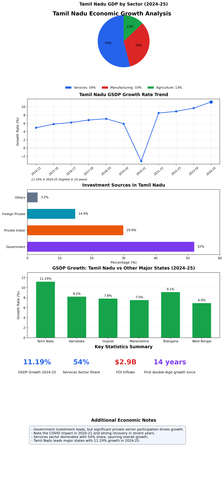

Tamil Nadu’s Economy is growing & Who is benefitting?
1 Tamil Nadu’s Economy is growing & Who is benefitting?
Tamil Nadu posted a real GSDP growth of 11.19% in 2024–25, the highest among Indian states and the first double-digit performance in 14 years, surpassing its budget projection (9%) by about 2.2 percentage points.
On the surface, this figure is undeniably impressive. These numbers warrant a closer examination. These statistics are often weaponized as symbols of success in discourse of Tamil political parties. Let’s encourage to form our own critical-independent assessment for a well-rounded perspective.
2 A Statistical Visualization of Tamil Nadu’s Growth
3 Shift to Manufacturing and Services is inevitable
Many Tamils romanticize agriculture with even politicians speaking highly of Agriculture. Nothing wrong with appreciating Agriculture, however lot of Tamils are not aware that the trend of agriculture jobs is declining, due to industrial revolution. There’s many factors for decline of agriculture jobs, primarily due to use of mechanization, equipment, better inputs, seeds, fertilizers. With such improvement and surplus production, We do not need more people back into agriculture. For example, Drip irrigation and improved crop planning increased 138%, a variety of Banana in yield, which corresponds to a 2.5 tons per hectare increase [1].
Agriculture is important, We’d go deeper into this sector for another time. Many times the farmers or laborers in Agriculture are attracted into manufacturing. This is due to higher salary offered due to market conditions. We might have more economic disparities in rural-urban divide in Tamil Nadu. This is a phenomenon across economies of the world; College educated professionals perform better economically than rural counter-parts with no education. Therefore, I urge readers to gain highly in demand college degrees.
3.1 Some of the job titles that are available within these sectors:
3.1.1 Agricultural Jobs
- Farmers
- Farm supervisor
- Farm Owner
- Laborer
- Livestock & Poultry management
- Agri-Sales
- Fruits and Marketing
- Agriculture engineers
- Agriculture Lecturers and Professors
3.1.2 Manufacturing Jobs
- Production Supervisor
- Plant Manager
- Quality Controller (QC)
- Assembly and Machine Operator
- Manufacturing Engineer and Manufacturing Engineering Lead
- Mechanical Engineer
- Senior Executive Quality Assurance (Supplier Management)
- Operations Manager
- Operations Engineer
- Production Head
- Manager - Operations
- Assembly Operator
- Pharma Manufacturing Coordinator
- Production Planning Engineer
- Executive
- Design Engineer (mechanical/electrical)
- Maintenance Engineer
- CEO, CFO, CTO
3.1.3 Service Sector Jobs
- IT and Software Development roles
- Healthcare and HealthTech
- Finance roles in Banking
- Automobile Sector roles
- Retail and E-commerce roles
- Media and Creative Services
- SaaS software roles
- Delivery and Logistics roles
- Doctors
- Nurses
- Healthcare roles
- Teachers and Lecturers
- Education Sector roles
- BPO roles
- Customer Service Representatives
There’s also strong rural-urban migration which has been taking place since industrial revolution. Since 2000s, Tamil Nadu has gained close to $13.84 billion in Investments [2]. For 2024-2025, Tamil Nadu gained close to US $2.903 billion [3].
4 What does 11.19% growth actually mean for Tamil Nadu?
This means more goods and services are being produced
This can come from either:
- Aggregate demand (increased consumption/investment)
- Aggregate supply (increased productive capacity — new factories, more labor pool entering, infrastructure, population growth)
5 Where’s this growth coming from?
- FDI inflows: $2.9 billion equity
- Manufacturing expansion: 33.37%
- Service sector growth: 53%
Sectors growing: IT, ITes, Software services, financial tech support, healthcare, tourism, logistics tech, edtech, retail
Within IT: - SaaS: ~35,000 employees, generating over $3 billion in revenue, higher value per employee vs. traditional ITes. - Traditional IT: help desk, business process outsourcing, call centers, data processing, data services, web development, mobile app development.
6 Who is really benefitting from this economic growth?
Growth is unevenly distributed, driven by capital inflows and demand.
For Example: VinFast factory in Tuticorin:
If one factory produces 100,000 cars with 5,000 employees, and a second identical factory is added → 200,000 cars with 10,000 employees.
Productivity hasn’t changed — to create long-term prosperity, Tamil Nadu should aim for productivity-driven growth (200,000 cars with 5,000 employees).
Inference: - Chennai & Coimbatore are leading growth hubs - Real estate in smaller towns will grow slower - Service and manufacturing workers benefit most - Agriculture and clerical workers benefit less - A college degree is often required to enter service sectors
Growth does not guarantee: - Significant rise in per capita income (averages skewed by low-paying sectors) - Productivity increases (if growth is demand-driven) - Higher living standards for the majority
Technology transfer limits:
Data-centers and tech offices in Chennai/Coimbatore bring skills, but main IP stays in the West.
7 Which groups are specifically benefitting?
- Wealth concentration is rising among a selected few, notably Tamil politicians
- Evidence: 42% asset growth among re-contesting TN MLAs (2016→2021), possibly much higher (150–400%)
- Business owners close to politicians benefit most
- Governance quality and legislative policy shape who wins from growth
8 What is the path forward for all Tamils?
- Demand accountability from Tamil Nadu’s State Legislature and institutions
- Inclusive policies — track distribution of growth benefits
- Replace unqualified legislators with professionals able to manage the economy
- Focus on quality of life and equal opportunities — not just headline GSDP growth
9 Sources
- The Hindu report by T. Ramakrishnan
- Economy of Tamil Nadu - Wikipedia
- Invest India: Five Indian states with highest FDI in FY 2024-25
- NITI Ayog Economic Report 2025
- TNPSC economy data
- Economic Times: New Data Center in Chennai
- SaaS Report from SaaSBoomi
- VinFast in Tuticorin - AP News
- ADR: Analysis of Assets in TN Assembly Election 2021
- New Indian Express: TN posts 11.19% GSDP growth
- MOSPI: GSVA/NSVA by economic activities, Tamil Nadu
References
[1]
M. Manikandan, K. Mahendran, and V. Balasubramanian, “Enhancing the crop yield through capacity building programs: Application of double difference method for evaluation of drip capacity building program in tamil nadu state, india,” Agricultural Sciences, vol. 5, no. 1, pp. 33–42, 2014, doi: 10.4236/as.2014.51003.
[2]
Invest India, “Tamil nadu investment profile.” 2025. Available: https://www.investindia.gov.in/state/tamil-nadu
[3]
Invest India, “Foreign direct investment inflows 2024–25.” 2025. Available: https://www.investindia.gov.in/team-india-blogs/five-indian-states-highest-fdi-fy-2024-25